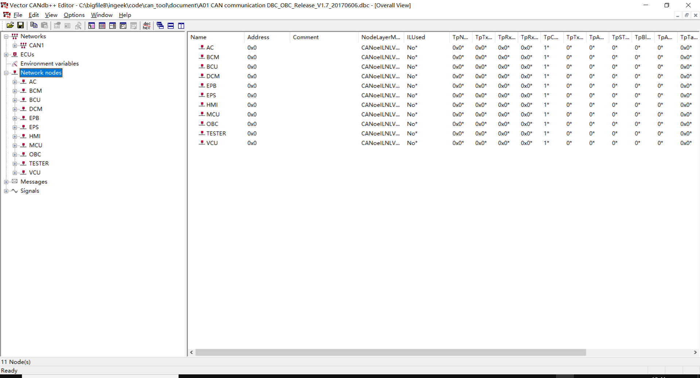
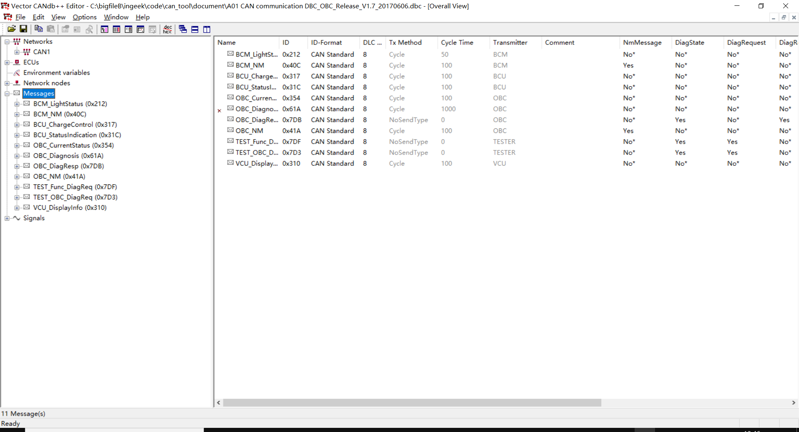
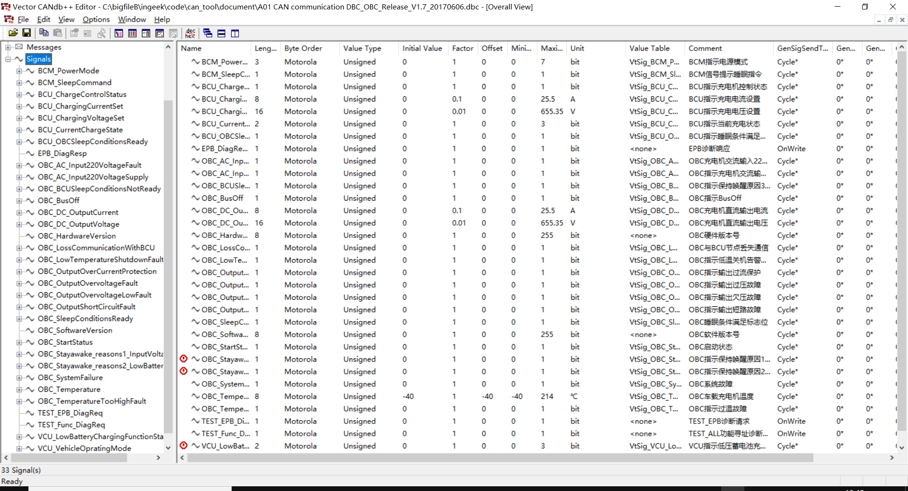

6. dbc¶
  VERSION ""
NS_ :
NS_DESC_
CM_
BA_DEF_
BA_
VAL_
CAT_DEF_
CAT_
FILTER
BA_DEF_DEF_
EV_DATA_
ENVVAR_DATA_
SGTYPE_
SGTYPE_VAL_
BA_DEF_SGTYPE_
BA_SGTYPE_
SIG_TYPE_REF_
VAL_TABLE_
SIG_GROUP_
SIG_VALTYPE_
SIGTYPE_VALTYPE_
BO_TX_BU_
BA_DEF_REL_
BA_REL_
BA_DEF_DEF_REL_
BU_SG_REL_
BU_EV_REL_
BU_BO_REL_
SG_MUL_VAL_
BS_:
BU_: AC BCM BCU DCM EPB EPS HMI MCU OBC TESTER VCU
BO_ 1036 BCM_NM: 8 BCM
SG_ BCM_SleepCommand : 0|1@0+ (1,0) [0|1] "bit" VCU,MCU,BCU,DCM,HMI,EPB,OBC
BO_ 1050 OBC_NM: 8 OBC
SG_ OBC_SleepConditionsReady : 0|1@0+ (1,0) [0|1] "bit" BCM
SG_ OBC_Stayawake_reasons1_InputVoltage : 16|1@0+ (1,0) [0|1] "bit" Vector__XXX
SG_ OBC_Stayawake_reasons2_LowBatteryCharging : 17|1@0+ (1,0) [0|1] "bit" Vector__XXX
SG_ OBC_BCUSleepConditionsNotReady : 18|1@0+ (1,0) [0|1] "bit" Vector__XXX
BO_ 1562 OBC_Diagnosis: 8 OBC
SG_ OBC_OutputOvervoltageFault : 0|1@0+ (1,0) [0|1] "bit" Vector__XXX
SG_ OBC_OutputOvervoltageLowFault : 1|1@0+ (1,0) [0|1] "bit" Vector__XXX
SG_ OBC_OutputShortCircuitFault : 2|1@0+ (1,0) [0|1] "bit" Vector__XXX
SG_ OBC_TemperatureTooHighFault : 3|1@0+ (1,0) [0|1] "bit" Vector__XXX
SG_ OBC_LowTemperatureShutdownFault : 4|1@0+ (1,0) [0|1] "bit" Vector__XXX
SG_ OBC_SoftwareVersion : 55|8@0+ (1,0) [0|255] "bit" Vector__XXX
SG_ OBC_AC_Input220VoltageFault : 5|1@0+ (1,0) [0|1] "bit" Vector__XXX
SG_ OBC_HardwareVersion : 63|8@0+ (1,0) [0|255] "bit" Vector__XXX
SG_ OBC_OutputOverCurrentProtection : 6|1@0+ (1,0) [0|1] "bit" Vector__XXX
SG_ OBC_LossCommunicationWithBCU : 7|1@0+ (1,0) [0|1] "bit" Vector__XXX
SG_ OBC_BusOff : 8|1@0+ (1,0) [0|1] "bit" Vector__XXX
BO_ 2003 TEST_OBC_DiagReq: 8 TESTER
SG_ TEST_EPB_DiagReq : 0|1@0+ (1,0) [0|1] "bit" OBC
BO_ 2011 OBC_DiagResp: 8 OBC
SG_ EPB_DiagResp : 0|1@0+ (1,0) [0|1] "bit" TESTER
BO_ 2015 TEST_Func_DiagReq: 8 TESTER
SG_ TEST_Func_DiagReq : 0|1@0+ (1,0) [0|1] "bit" VCU,MCU,BCU,AC,BCM,DCM,HMI,EPS,EPB,OBC
BO_ 530 BCM_LightStatus: 8 BCM
SG_ BCM_PowerMode : 11|3@0+ (1,0) [0|7] "bit" VCU,DCM,HMI,EPB,OBC
BO_ 784 VCU_DisplayInfo: 8 VCU
SG_ VCU_VehicleOpratingMode : 6|2@0+ (1,0) [0|3] "bit" MCU,BCU,HMI,OBC
SG_ VCU_LowBatteryChargingFunctionState : 31|2@0+ (1,0) [0|3] "bit" BCU,OBC
BO_ 791 BCU_ChargeControl: 8 BCU
SG_ BCU_ChargeControlStatus : 8|1@0+ (1,0) [0|1] "bit" OBC
SG_ BCU_CurrentChargeState : 10|2@0+ (1,0) [0|3] "bit" VCU,MCU,HMI,OBC
SG_ BCU_ChargingVoltageSet : 23|16@0+ (0.01,0) [0|655.35] "V" OBC
SG_ BCU_ChargingCurrentSet : 39|8@0+ (0.1,0) [0|25.5] "A" OBC
BO_ 796 BCU_StatusIndication: 8 BCU
SG_ BCU_OBCSleepConditionsReady : 50|1@0+ (1,0) [0|1] "bit" OBC
BO_ 852 OBC_CurrentStatus: 8 OBC
SG_ OBC_StartStatus : 0|1@0+ (1,0) [0|1] "bit" BCU
SG_ OBC_SystemFailure : 1|1@0+ (1,0) [0|1] "bit" BCU
SG_ OBC_AC_Input220VoltageSupply : 2|1@0+ (1,0) [0|1] "bit" BCU
SG_ OBC_DC_OutputVoltage : 39|16@0+ (0.01,0) [0|655.35] "V" BCU
SG_ OBC_DC_OutputCurrent : 55|8@0+ (0.1,0) [0|25.5] "A" BCU
SG_ OBC_Temperature : 63|8@0+ (1,-40) [-40|214] "℃" Vector__XXX
CM_ " ";
CM_ SG_ 852 OBC_StartStatus "OBC启动状态";
CM_ SG_ 852 OBC_SystemFailure "OBC系统故障";
CM_ SG_ 852 OBC_AC_Input220VoltageSupply "OBC指示充电机交流输入220V电压是否加载";
CM_ SG_ 852 OBC_DC_OutputVoltage "OBC充电机直流输出电压";
CM_ SG_ 852 OBC_DC_OutputCurrent "OBC充电机直流输出电流";
CM_ SG_ 852 OBC_Temperature "OBC车载充电机温度";
CM_ SG_ 1050 OBC_SleepConditionsReady "OBC睡眠条件满足标志位";
CM_ SG_ 1050 OBC_Stayawake_reasons1_InputVoltage "OBC指示保持唤醒原因1_输入交流电压存在且充电未完成";
CM_ SG_ 1050 OBC_Stayawake_reasons2_LowBatteryCharging "OBC指示保持唤醒原因2_小电池电量低充电开始";
CM_ SG_ 1050 OBC_BCUSleepConditionsNotReady "OBC指示保持唤醒原因3_BCU睡眠条件不满足";
CM_ SG_ 1562 OBC_OutputOvervoltageFault "OBC指示输出过压故障";
CM_ SG_ 1562 OBC_OutputOvervoltageLowFault "OBC指示输出欠压故障";
CM_ SG_ 1562 OBC_OutputShortCircuitFault "OBC指示输出短路故障";
CM_ SG_ 1562 OBC_TemperatureTooHighFault "OBC指示过温故障";
CM_ SG_ 1562 OBC_LowTemperatureShutdownFault "OBC指示低温关机告警（故障）";
CM_ SG_ 1562 OBC_SoftwareVersion "OBC软件版本号";
CM_ SG_ 1562 OBC_AC_Input220VoltageFault "OBC充电机交流输入220电压故障状态";
CM_ SG_ 1562 OBC_HardwareVersion "OBC硬件版本号";
CM_ SG_ 1562 OBC_OutputOverCurrentProtection "OBC指示输出过流保护";
CM_ SG_ 1562 OBC_LossCommunicationWithBCU "OBC与BCU节点丢失通信";
CM_ SG_ 1562 OBC_BusOff "OBC指示BusOff";
CM_ SG_ 2011 EPB_DiagResp "EPB诊断响应";
CM_ SG_ 784 VCU_VehicleOpratingMode "VCU指示当前车辆运行模式";
CM_ SG_ 784 VCU_LowBatteryChargingFunctionState "VCU指示低压蓄电池充电功能状态";
CM_ SG_ 791 BCU_ChargeControlStatus "BCU指示充电机控制状态";
CM_ SG_ 791 BCU_CurrentChargeState "BCU指示当前充电状态";
CM_ SG_ 791 BCU_ChargingVoltageSet "BCU指示充电电压设置";
CM_ SG_ 791 BCU_ChargingCurrentSet "BCU指示充电电流设置";
CM_ SG_ 796 BCU_OBCSleepConditionsReady "BCU指示睡眠条件满足（OBC用于睡眠条件判断）";
CM_ SG_ 530 BCM_PowerMode "BCM指示电源模式";
CM_ SG_ 1036 BCM_SleepCommand "BCM信号提示睡眠指令";
CM_ SG_ 2003 TEST_EPB_DiagReq "TEST_EPB诊断请求";
CM_ SG_ 2015 TEST_Func_DiagReq "TEST_ALL功能寻址诊断请求";
BA_DEF_ BO_ "NmMessage" ENUM "No","Yes";
BA_DEF_ BO_ "DiagState" ENUM "No","Yes";
BA_DEF_ BO_ "DiagRequest" ENUM "No","Yes";
BA_DEF_ BO_ "DiagResponse" ENUM "No","Yes";
BA_DEF_ BO_ "GenMsgSendType" ENUM "Cycle","NoSendType","IfActive";
BA_DEF_ BO_ "GenMsgCycleTime" INT 0 0;
BA_DEF_ SG_ "GenSigSendType" ENUM "Cycle","OnChange","OnWrite","IfActive","OnChangeWithRepetition","OnWriteWithRepetition","IfActiveWithRepetition";
BA_DEF_ SG_ "GenSigStartValue" INT 0 0;
BA_DEF_ SG_ "GenSigInactiveValue" INT 0 0;
BA_DEF_ BO_ "GenMsgCycleTimeFast" INT 0 0;
BA_DEF_ BO_ "GenMsgNrOfRepetition" INT 0 0;
BA_DEF_ BO_ "GenMsgDelayTime" INT 0 0;
BA_DEF_ "DBName" STRING ;
BA_DEF_ BU_ "NodeLayerModules" STRING ;
BA_DEF_ SG_ "GenSigTimeoutValue" INT 0 1000000000;
BA_DEF_ BO_ "GenMsgCycleTimeActive" INT 0 0;
BA_DEF_ BU_ "ILUsed" ENUM "No","Yes";
BA_DEF_ BU_ "TpNodeBaseAddress" HEX 0 2047;
BA_DEF_ BU_ "TpTxIdentifier" HEX 0 2047;
BA_DEF_ BU_ "TpRxIdentifier" HEX 0 2047;
BA_DEF_ BU_ "TpRxMask" HEX 0 2047;
BA_DEF_ BU_ "TpCanBus" INT 1 2;
BA_DEF_ BU_ "TpTxAdrMode" INT 0 1;
BA_DEF_ BU_ "TpAddressExtension" INT 0 100000000;
BA_DEF_ BU_ "TpSTMin" INT 0 1000000000;
BA_DEF_ BU_ "TpBlockSize" INT 0 10000000;
BA_DEF_ BU_ "TpAddressingMode" INT 0 4;
BA_DEF_ BU_ "TpTargetAddress" HEX 0 255;
BA_DEF_ BU_ "TpUseFC" INT 0 1;
BA_DEF_ BU_ "DiagStationAddress" HEX 0 255;
BA_DEF_ BU_ "NmNode" ENUM "Not","Yes";
BA_DEF_ BU_ "NmStationAddress" HEX 0 65535;
BA_DEF_ BU_ "NmCAN" INT 0 2;
BA_DEF_ "Manufacturer" STRING ;
BA_DEF_ "VersionYear" INT 0 99;
BA_DEF_ "VersionMonth" INT 0 12;
BA_DEF_ "VersionWeek" INT 0 52;
BA_DEF_ "VersionDay" INT 0 31;
BA_DEF_ "VersionNumber" INT 0 0;
BA_DEF_ "TpBaseAddress" HEX 0 2047;
BA_DEF_ "NmType" STRING ;
BA_DEF_ "NmBaseAddress" HEX 0 2047;
BA_DEF_ "NmMessageCount" INT 0 255;
BA_DEF_ BO_ "_Cdb_Sc_CTm_FAW_v3_0" INT 0 0;
BA_DEF_ BO_ "_Cdb_Sc_CTm_FAW_v2_3" INT 0 0;
BA_DEF_ BO_ "_Cdb_Sc_CTm_FAW_v3_1" INT 0 0;
BA_DEF_ EV_ "GenEnvAutoGenCtrl" ENUM "No","Yes";
BA_DEF_ EV_ "GenEnvMsgOffset" INT 0 2147483647;
BA_DEF_ EV_ "GenEnvMsgName" STRING ;
BA_DEF_ EV_ "GenEnvIsGeneratedSnd" ENUM "No","Yes";
BA_DEF_ SG_ "GenSigEnvVarType" ENUM "int","float","undef";
BA_DEF_ "GenEnvVarPrefix" STRING ;
BA_DEF_ "GenEnvVarEndingSnd" STRING ;
BA_DEF_ "GenEnvVarEndingDsp" STRING ;
BA_DEF_ BO_ "_Cdb_Sc_CTm_FAW_v2_2" INT 0 0;
BA_DEF_ BO_ "_Cdb_Sc_CTm_FAW_v2_1" INT 0 0;
BA_DEF_ BO_ "GenMsgILSupport" ENUM "No","Yes";
BA_DEF_ BO_ "GenMsgStartDelayTime" INT 0 65535;
BA_DEF_ "BusType" STRING ;
BA_DEF_ SG_ "SystemSignalLongSymbol" STRING ;
BA_DEF_REL_ BU_SG_REL_ "GenSigTimeoutTime" INT 0 10000000;
BA_DEF_REL_ BU_SG_REL_ "GenSigTimeoutMsg" HEX 0 2047;
BA_DEF_DEF_ "NmMessage" "No";
BA_DEF_DEF_ "DiagState" "No";
BA_DEF_DEF_ "DiagRequest" "No";
BA_DEF_DEF_ "DiagResponse" "No";
BA_DEF_DEF_ "GenMsgSendType" "Cycle";
BA_DEF_DEF_ "GenMsgCycleTime" 0;
BA_DEF_DEF_ "GenSigSendType" "Cycle";
BA_DEF_DEF_ "GenSigStartValue" 0;
BA_DEF_DEF_ "GenSigInactiveValue" 0;
BA_DEF_DEF_ "GenMsgCycleTimeFast" 0;
BA_DEF_DEF_ "GenMsgNrOfRepetition" 0;
BA_DEF_DEF_ "GenMsgDelayTime" 0;
BA_DEF_DEF_ "DBName" "";
BA_DEF_DEF_ "NodeLayerModules" "CANoeILNLVector.dll";
BA_DEF_DEF_ "GenSigTimeoutValue" 0;
BA_DEF_DEF_ "GenMsgCycleTimeActive" 0;
BA_DEF_DEF_ "ILUsed" "No";
BA_DEF_DEF_ "TpNodeBaseAddress" 0;
BA_DEF_DEF_ "TpTxIdentifier" 0;
BA_DEF_DEF_ "TpRxIdentifier" 0;
BA_DEF_DEF_ "TpRxMask" 0;
BA_DEF_DEF_ "TpCanBus" 1;
BA_DEF_DEF_ "TpTxAdrMode" 0;
BA_DEF_DEF_ "TpAddressExtension" 0;
BA_DEF_DEF_ "TpSTMin" 0;
BA_DEF_DEF_ "TpBlockSize" 0;
BA_DEF_DEF_ "TpAddressingMode" 0;
BA_DEF_DEF_ "TpTargetAddress" 0;
BA_DEF_DEF_ "TpUseFC" 0;
BA_DEF_DEF_ "DiagStationAddress" 0;
BA_DEF_DEF_ "NmNode" "Not";
BA_DEF_DEF_ "NmStationAddress" 0;
BA_DEF_DEF_ "NmCAN" 0;
BA_DEF_DEF_ "Manufacturer" "";
BA_DEF_DEF_ "VersionYear" 0;
BA_DEF_DEF_ "VersionMonth" 0;
BA_DEF_DEF_ "VersionWeek" 0;
BA_DEF_DEF_ "VersionDay" 0;
BA_DEF_DEF_ "VersionNumber" 0;
BA_DEF_DEF_ "TpBaseAddress" 0;
BA_DEF_DEF_ "NmType" "";
BA_DEF_DEF_ "NmBaseAddress" 1024;
BA_DEF_DEF_ "NmMessageCount" 128;
BA_DEF_DEF_ "_Cdb_Sc_CTm_FAW_v3_0" 0;
BA_DEF_DEF_ "_Cdb_Sc_CTm_FAW_v2_3" 0;
BA_DEF_DEF_ "_Cdb_Sc_CTm_FAW_v3_1" 0;
BA_DEF_DEF_ "GenEnvAutoGenCtrl" "No";
BA_DEF_DEF_ "GenEnvMsgOffset" 0;
BA_DEF_DEF_ "GenEnvMsgName" "";
BA_DEF_DEF_ "GenEnvIsGeneratedSnd" "No";
BA_DEF_DEF_ "GenSigEnvVarType" "undef";
BA_DEF_DEF_ "GenEnvVarPrefix" "Env";
BA_DEF_DEF_ "GenEnvVarEndingSnd" "_";
BA_DEF_DEF_ "GenEnvVarEndingDsp" "Dsp_";
BA_DEF_DEF_ "_Cdb_Sc_CTm_FAW_v2_2" 0;
BA_DEF_DEF_ "_Cdb_Sc_CTm_FAW_v2_1" 0;
BA_DEF_DEF_ "GenMsgILSupport" "No";
BA_DEF_DEF_ "GenMsgStartDelayTime" 0;
BA_DEF_DEF_ "BusType" "CAN";
BA_DEF_DEF_REL_ "GenSigTimeoutTime" 0;
BA_DEF_DEF_REL_ "GenSigTimeoutMsg" 0;
BA_DEF_DEF_ "SystemSignalLongSymbol" "";
BA_ "DBName" "CAN1";
BA_ "NmMessage" BO_ 1036 1;
BA_ "GenMsgCycleTime" BO_ 1036 100;
BA_ "NmMessage" BO_ 1050 1;
BA_ "GenMsgCycleTime" BO_ 1050 100;
BA_ "GenMsgCycleTime" BO_ 1562 1000;
BA_ "DiagState" BO_ 2003 1;
BA_ "DiagRequest" BO_ 2003 1;
BA_ "GenMsgSendType" BO_ 2003 1;
BA_ "GenSigSendType" SG_ 2003 TEST_EPB_DiagReq 2;
BA_ "DiagState" BO_ 2011 1;
BA_ "DiagResponse" BO_ 2011 1;
BA_ "GenMsgSendType" BO_ 2011 1;
BA_ "GenSigSendType" SG_ 2011 EPB_DiagResp 2;
BA_ "DiagState" BO_ 2015 1;
BA_ "DiagRequest" BO_ 2015 1;
BA_ "GenMsgSendType" BO_ 2015 1;
BA_ "GenSigSendType" SG_ 2015 TEST_Func_DiagReq 2;
BA_ "GenMsgCycleTime" BO_ 530 50;
BA_ "GenMsgCycleTime" BO_ 784 100;
BA_ "GenMsgCycleTime" BO_ 791 100;
BA_ "GenMsgCycleTime" BO_ 796 100;
BA_ "GenMsgCycleTime" BO_ 852 100;
VAL_ 852 OBC_StartStatus 1 "Start Charging" 0 "Stop Charging" ;
VAL_ 852 OBC_SystemFailure 1 "Failure" 0 "Nomal" ;
VAL_ 852 OBC_AC_Input220VoltageSupply 1 "Supply" 0 "Not Supply" ;
VAL_ 852 OBC_DC_OutputVoltage 65535 "Invalid" ;
VAL_ 852 OBC_DC_OutputCurrent 255 "Invalid" ;
VAL_ 852 OBC_Temperature 255 "Invalid" ;
VAL_ 1050 OBC_SleepConditionsReady 1 "Active" 0 "Inactive" ;
VAL_ 1050 OBC_Stayawake_reasons1_InputVoltage 1 "Active" 0 "Inactive" ;
VAL_ 1050 OBC_Stayawake_reasons2_LowBatteryCharging 1 "Active" 0 "Inactive" ;
VAL_ 1050 OBC_BCUSleepConditionsNotReady 1 "Active" 0 "Inactive" ;
VAL_ 1562 OBC_OutputOvervoltageFault 1 "Failure" 0 "Nomal" ;
VAL_ 1562 OBC_OutputOvervoltageLowFault 1 "Failure" 0 "Nomal" ;
VAL_ 1562 OBC_OutputShortCircuitFault 1 "Failure" 0 "Nomal" ;
VAL_ 1562 OBC_TemperatureTooHighFault 1 "Failure" 0 "Nomal" ;
VAL_ 1562 OBC_LowTemperatureShutdownFault 1 "Failure" 0 "Nomal" ;
VAL_ 1562 OBC_AC_Input220VoltageFault 1 "Failure" 0 "Nomal" ;
VAL_ 1562 OBC_OutputOverCurrentProtection 1 "Failure" 0 "Nomal" ;
VAL_ 1562 OBC_LossCommunicationWithBCU 1 "Failure" 0 "Nomal" ;
VAL_ 1562 OBC_BusOff 1 "Failure" 0 "Nomal" ;
VAL_ 784 VCU_VehicleOpratingMode 3 "Reserved" 2 "On-Board Charging Mode" 1 "Driving Mode" 0 "Stop Mode" ;
VAL_ 784 VCU_LowBatteryChargingFunctionState 3 "Invalid" 2 "Stop" 1 "Start" 0 "Reserved" ;
VAL_ 791 BCU_ChargeControlStatus 1 "Request Charging" 0 "Stop Charging" ;
VAL_ 791 BCU_CurrentChargeState 3 "Invalid" 2 "Finish" 1 "Charging" 0 "Initial States" ;
VAL_ 791 BCU_ChargingVoltageSet 65535 "Invalid" ;
VAL_ 791 BCU_ChargingCurrentSet 255 "Invalid" ;
VAL_ 796 BCU_OBCSleepConditionsReady 1 "Active" 0 "Inactive" ;
VAL_ 530 BCM_PowerMode 7 "Reserved" 6 "Reserved" 5 "Reserved" 4 "Reserved" 3 "Reserved" 2 "ON" 1 "ACC" 0 "OFF" ;
VAL_ 1036 BCM_SleepCommand 1 "Active" 0 "Inactive" ;
既然是CAN仿真工具，第一篇就讲一下CAN DBC的格式， 如何通过dbc文件定位到需要的信号。 下面用到的所有定义都已经做过处理,不涉及任何商业使用的数据。
各个CAN工具公司都有CANDBC的编辑与查看工具并且都很智能, 比如Vector的CANOE跟 CAN Alyzer或者intrepidcs的工具都有dbc的工具。 那么问题来了，为啥我们还要人工去看看怎么解析, 因为我们要做的是自己的CAN工具，CAN dbc 的各种操作都需要自己去实现 ， 所以这篇文章就是介绍如何用肉眼去解析CAN dbc，有了人工解析的能力， 使用代码解析就手到擒来了。
针对一个信号无非是以下几个内容:
信号所在的MessageID与名字，每个信号都依附于一个MeesageID；
信号的名字，这个信号叫什么名字，有时候信号名字会有变化；
信号的开始位置与长度，及时信号名变化，只要信号的位置与长度不变就不影响该信号的值；
- 信号的Factor与Offset，由于每个CAN message包含64bit的数据，
只能表示整型，但是汽车中有很多物理量是需要小数点及负数的 ， 比如温度，-40度-+40度。因此需要引入factor和offset的概念， 在计算物理值的时候需要用以下公式计算： raw_value*Factor+Offset=Py_value 有时候我们需要计算某个物理值对应的rawvalue， 简单的解方程就能得到raw_value.；
- 信号的值列表，有些信号为枚举类型，比如车辆的Ignition信号，会有启动，
OFF不同的状态，对应不同的raw value，包括物理值， 也会有invalid，Error等特殊状态，在使用解析的时候都需要关注；
- 极大值，极小值,一般根据信号的字节长度，跟Factor和Offset就可以
计算出来，没什么实际作用；
信号的说明，描述说明信号是个什么东西，比如这个信号是车速之类的 ；
下面介绍如何从DBC里面找到上面这些信息：
6.3. BS波特率¶
格式如下：
BS_:[baudrate:BTR1,BTR2];
其中BS为关键字，用于定义CAN网络的波特率； [ ]内容表示为可选部分，可以省略（如下图例子中即把该部分省略了）； 但关键字”BS:”必须存在，省略则会出错。
BS_:
6.4. BU网络节点¶
格式如下：
BU_:Nodename1 Nodename2 Nodename3 ……
其中BU_为关键字，表示网络节点，格式中的Nodename1、 Nodename2表示定义的网络节点名字，由用户自己定义； 但需保证节点命名的唯一性。
如:
BU_: AVNT ACU HUD ：表示定义了AVNT、ACU、HUD这三个网络节点。
第一步，需要知道开头两个字符的定义
Keyword |
Object Type |
|---|---|
BU |
Network Node 网络节点 |
BO |
Message 消息 |
SG |
Signal 信号 |
EV |
Environment Varialbe 环境变量 |
6.5. BO报文¶
第二步，找到Message，message都是以BO开头， 格式如下，从这里我们可以得到上面所述的信息1：
message = BO_ message_id message_name ‘:’ message_size transmitter {signal};
例如：
BO_ 112 BCM_Mesage1: 8 BCM
“BO_ ” 起始字符串，代表这一行为定义一个Message
“112” 为10进制的Message ID
“BCM_Message1” 为Message的名字
“：” 分割符
“8” message 有多少个byte，一般为8个byte， 64 bit
“BCM” 消息的发送者
6.6. SG 信号¶
第三步，找到signal， 格式如下，在这个里面我们可以找到大部分的信息：
signal = ‘SG_’ signal_name multiplexer_indicator ‘:’ start_bit ‘|’ signal_size ‘@’ byte_order value_type ‘(‘factor’,’offset’)’ ‘{‘ minimum ‘|’ maximum ‘|’ unit receiver {‘,’ receiver};
例如：
BO_ 100 BCM_Message1: 8 BCM //这一行为Message
SG_ Ignition_Status : 13|4@0+ (1,0) [0|0] "SED" GW //以下为依附于该Message的Signal
SG_ Veh_V : 27|12@0+ (0.1,0) [0|409.5] "0 to 409.5 kilometers per hour" ECM
“SG_” 该行为信号
“Ignition_Status” : 信号名为IgnitionStatus
“：13” 冒号后面第一位是起始位置
“|4” |后面的值，代表信号长度为4个bit
“@0+” 0 代表 byte_order = '0' | '1' ; (* 0=little endian, 1=big endian *)， +号代表有无符号，value_type = '+' | '-' ; (* +=unsigned, -=signed *)
“（1,0）” 小括号的值代表Factor和Offset，用于计算
“[0|0]” 中括号的值代表最大值与最小值
“SED” 代表单位，SED一般代表没有单位，因为这个值是一个枚举状态
“GW” 最后的GW代表接受的节点
6.7. VAL数值表¶
第三步，找到信号的枚举状态，该行为一堆键值对，不同的值代表什么意思
value_descriptions_for_signal = ‘VAL_’ message_id signa_name { value_description } ‘;’;
VAL_ 100 Ignition_Status 15 "Invalid" 8 "Start" 4 "Run" 2 "Off" 0 "Unknown" ;
“VAL_” 代表该行定义了一堆键值对，信号的值与内容
“100” 与之前的MessageID一致， 代表信号所在的Message
“Ignition_Status” 信号的名字
“15 'Invalid'” 数值15代表invalid，其他都一样
6.8. BA 属性定义¶
BA开头定义了信号的属性，比如发送周期什么的
- 属性定义部分
格式如下：
BA_DEF_ Object AttributeName ValueType Min Max;
BA_DEF_DEF_ AttributeName DefaultValue;
BA_DEF_为关键字，表示属性定义；
Object表示属性定义的对象类型，可以是节点“BU”、报文“BO”、消息”SG”、网络节点” ”（用空格表示）等；
AttributeName表示进行定义的属性名字；
ValueType表示属性值的类型，可以是整型、字符串、浮点型、枚举类型等；
Min/Max表示属性值的上下最值，即指定了取值范围（字符串类型没有此项）。
BA_DEF_DEF_为关键字，表示定义属性的初始值；
DefaultValue表示该属性的初始值。
如
BA_DEF_ SG_ “MyTry” INT 0 11; BA_DEF_DEF_ “MyTry” 0;
表示对定义了一个针对信号类型的属性，属性名为”MyTry”，属性值是整型数据，取值范围在0到11之间，初始值为0。
6.9. CM 注解¶
格式如下： CM_ Object MessageId/NodeName “Comment”
CM_为关键字，表示注解信息；
Object表示进行注解的对象类型，可以是节点“BU”、报文“BO”、消息”SG”；
MessageId/NodeName 表示进行注解的对象，若前面的对象类型是信号或者报文，则这里的值应为报文的ID（10进制数表示）；若前面的对象类型为节点，则这里的值应为节点的名字；
Comment表示进行注解的文本信息；
如:
CM_ SG_ 996 HUD_HeightLv “Control hud height level”;
表示对ID为996(0x3E4)这条报文下的名为”HUD_HeightLv ”的信号进行注解说明，说明的内容为"Control hud height level"。
如:
CM_ BU_ HUD “Head Up Display";表示对HUD这个节点进行注解说明，说明的内容为" Head Up Display "。
BA_ “GenMsgCycleTime” BO_ 100 60; 代表信号为100的发送周期为60ms
https://blog.csdn.net/weixin_44536482/article/details/89030152
6.10. 参考¶
《DBC_File_Format_Documentation.pdf》
6.11. python 网络节点解析BU¶
BU_: AC BCM BCU DCM EPB EPS HMI MCU OBC TESTER VCU
策略：
找出BU_:关键字所在行，以空格为分割提取出字符
6.12. can_rx.c¶
#include "can_rx.h"
#include "can_comm.h"
static void id318_rx_handle(u_unit_t addr, u_unit_t len)
{
u32_t i;
i++;
}
static struct can_comm_msg_t can_rx_msg[] =
{
CAN_FRAME_MSG(0x318, STANDARD_FRAME, DATA_FRAME, 8U, T_NORMAL, NORMAL_MODE, 0, 0, id318_rx_handle), //TEST_RX_MSG_IDX1
CAN_FRAME_MSG(0x3c0, STANDARD_FRAME, DATA_FRAME, 8U, T_NORMAL, NORMAL_MODE, 0, 0, NULL), //TEST_RX_MSG_IDX2
};
void can_rx_init(void)
{
int i;
for (i = 0; i < sizeof(can_rx_msg) / sizeof(struct can_comm_t); i++)
{
can_comm_index_t idx = can_comm_add(&can_rx_msg[i].msg);
if (idx != CAN_COMM_INVALD_IDX)
{
can_rx_msg[i].idx = idx;
can_set_filter(can_rx_msg[i].msg.frame.id, can_rx_msg[i].msg.frame.rtr, can_rx_msg[i].msg.frame.ide);
}
}
}
void can_rx_get_test1(u8_t *data, u8_t *len)
{
can_comm_get_data(can_rx_msg[TEST_RX_MSG_IDX1].idx, data, len);
}
6.13. can_rx.h¶
#ifndef __CAN_RX_H__
#define __CAN_RX_H__
#include "std_type.h"
#define TEST_RX_MSG_IDX1 0
#define TEST_RX_MSG_IDX2 1
void can_rx_init(void);
void can_rx_get_test1(u8_t *data, u8_t *len);
void can_rx_get_test2(u8_t *data, u8_t *len);
#endif
6.14. can_tx.c¶
#include "can_tx.h"
#include "can_comm.h"
static struct can_comm_msg_t can_tx_msg[] =
{
CAN_FRAME_MSG(0x33, STANDARD_FRAME, DATA_FRAME, 8, T_NORMAL, REVERSE_MODE, 3, 40, NULL), //TEST_TX_MSG_IDX1
CAN_FRAME_MSG(0x34, STANDARD_FRAME, DATA_FRAME, 8, T_PERIOD, NORMAL_MODE, 0, 40, NULL), //TEST_TX_MSG_IDX2
};
void can_tx_init(void)
{
int i;
for (i = 0; i < sizeof(can_tx_msg) / sizeof(struct can_comm_t); i++)
{
can_comm_index_t idx = can_comm_add(&can_tx_msg[i].msg);
if (idx != CAN_COMM_INVALD_IDX)
{
can_tx_msg[i].idx = idx;
}
}
}
void can_tx_set_test1(u8_t *data, u32_t len)
{
can_comm_set_data(can_tx_msg[TEST_TX_MSG_IDX1].idx, data, len);
can_comm_start_send(can_tx_msg[TEST_TX_MSG_IDX1].idx);
}
void can_tx_set_test2(u8_t *data, u32_t len)
{
can_comm_set_data(can_tx_msg[TEST_TX_MSG_IDX2].idx, data, len);
can_comm_start_send(can_tx_msg[TEST_TX_MSG_IDX2].idx);
}
6.15. can_tx.h¶
#ifndef __CAN_TX_H__
#define __CAN_TX_H__
#include "std_type.h"
#define TEST_TX_MSG_IDX1 0
#define TEST_TX_MSG_IDX2 1
void can_tx_init(void);
void can_tx_set_test1(u8_t *data, u32_t len);
void can_tx_set_test2(u8_t *data, u32_t len);
#endif
6.17. 帧配置¶
Message ID
- 帧类型
DATA_FRAME
REMOTE_FRAME
https://blog.csdn.net/weixin_37787043/article/details/80906905
- 帧格式
EXTEND_FRAME
STANDARD_FRAME
- CAN类型
T_NORMAL
T_PHY_DIAG_REQ
T_FUNC_DIAG_REQ
T_DIAG_RESP
T_NM
T_PERIOD
T_MI
- 发送报文模式
NORMAL_MODE
REVERSE_MODE
发送次数
发送周期
6.18. can_rx.c策略¶
rxdata1.c
#include "can_rx.h"
#include "can_comm.h"
ui处理
static void id318_rx_handle(u_unit_t addr, u_unit_t len)
rxdata2.c
{
u32_t i;
i++;
}
rxdata3.c
static struct can_comm_msg_t can_rx_msg[] =
{
ui处理
CAN_FRAME_MSG(0x318, STANDARD_FRAME, DATA_FRAME, 8U, T_NORMAL, NORMAL_MODE, 0, 0, id318_rx_handle), //TEST_RX_MSG_IDX1
rxdata4.c
};
void can_rx_init(void)
{
int i;
for (i = 0; i < sizeof(can_rx_msg) / sizeof(struct can_comm_t); i++)
{
can_comm_index_t idx = can_comm_add(&can_rx_msg[i].msg);
if (idx != CAN_COMM_INVALD_IDX)
{
can_rx_msg[i].idx = idx;
can_set_filter(can_rx_msg[i].msg.frame.id, can_rx_msg[i].msg.frame.rtr, can_rx_msg[i].msg.frame.ide);
}
}
}